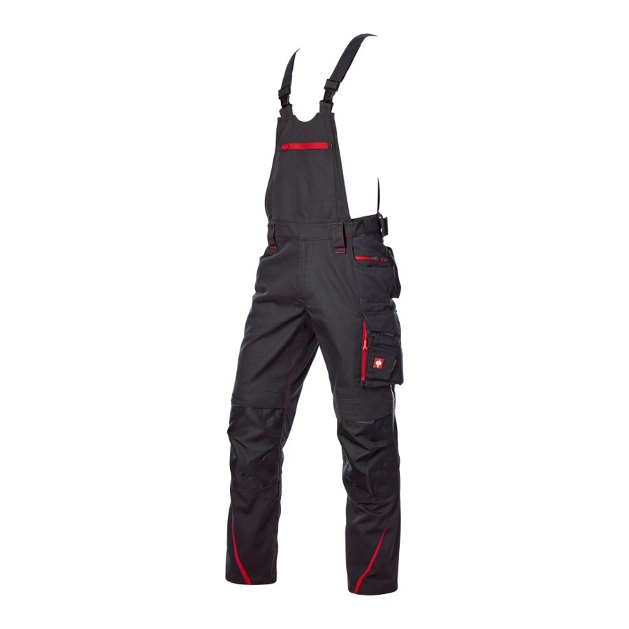
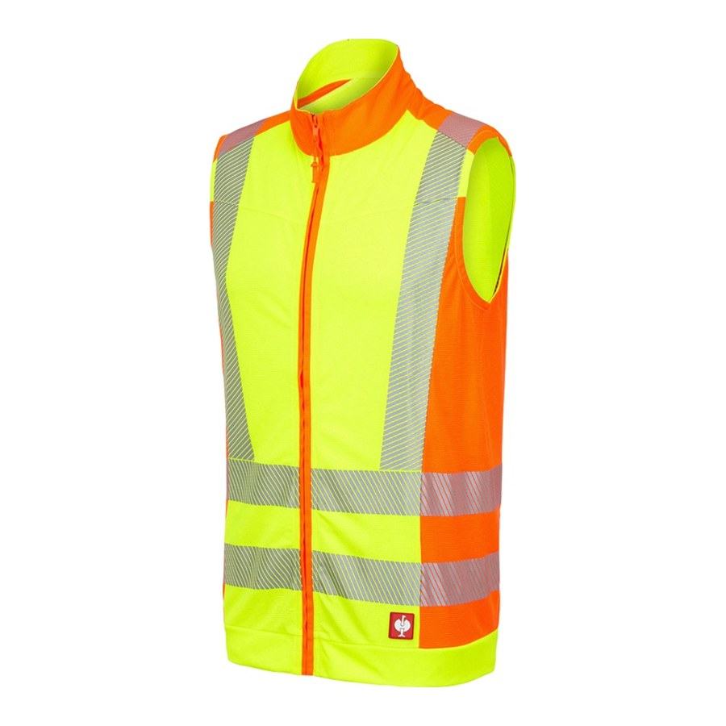
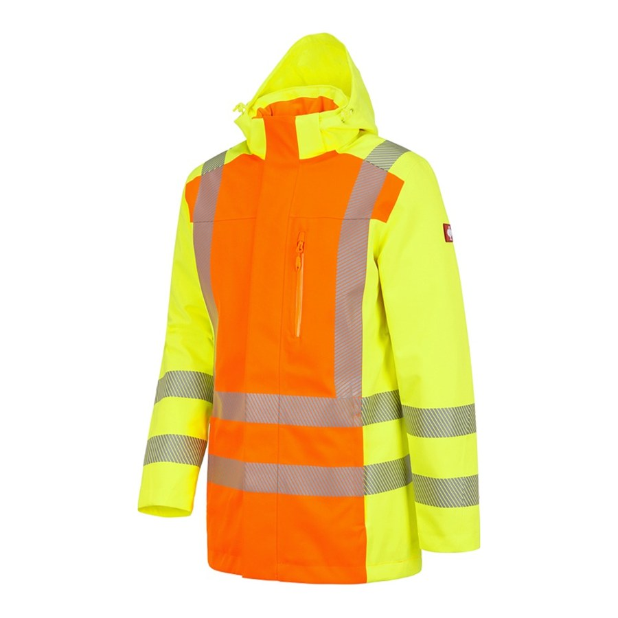
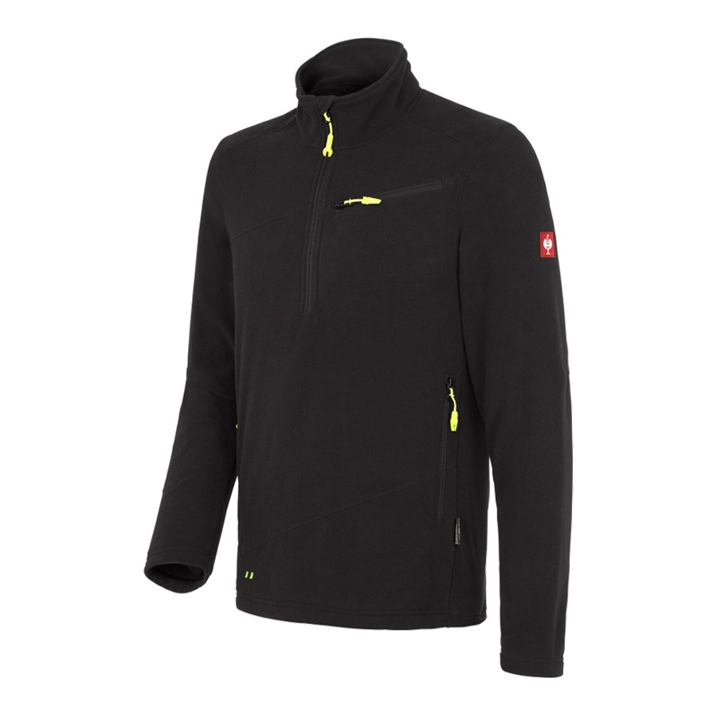
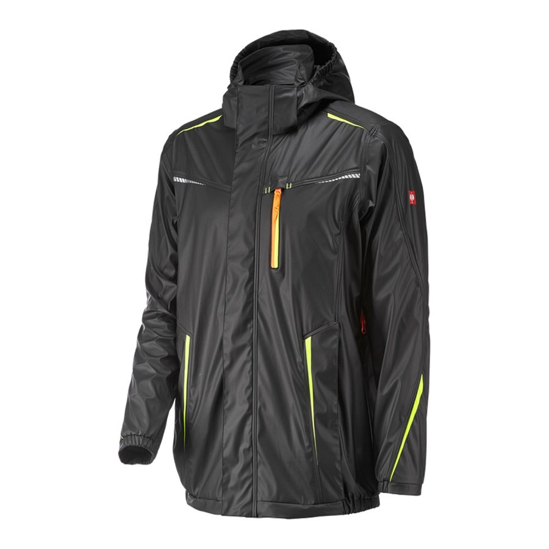
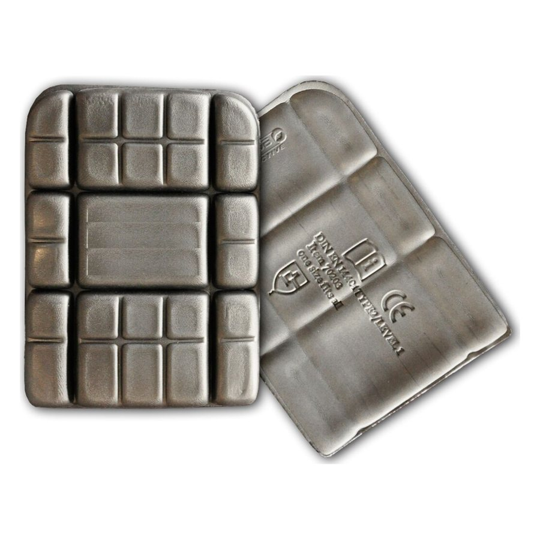
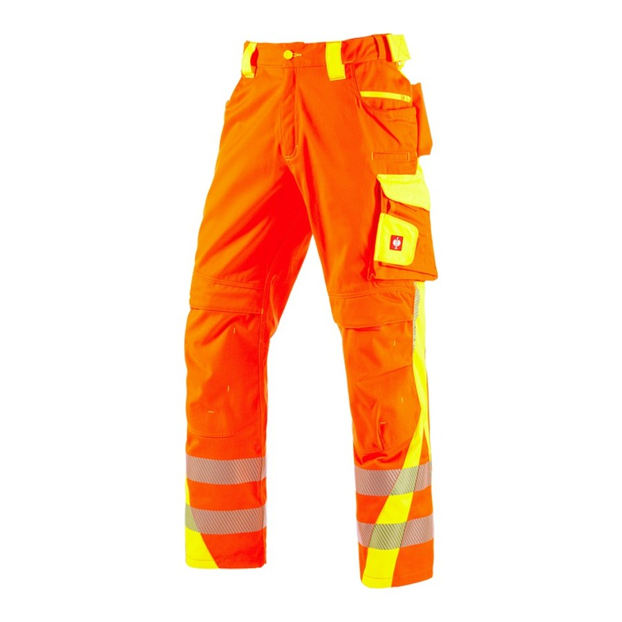
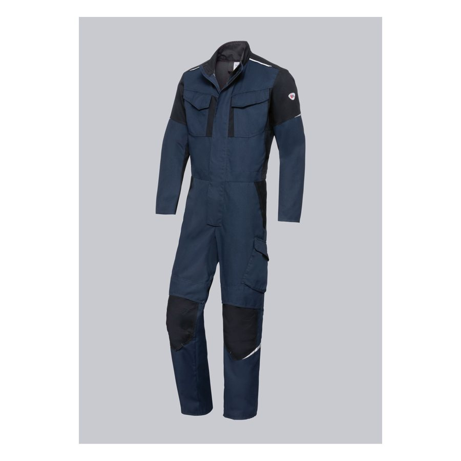
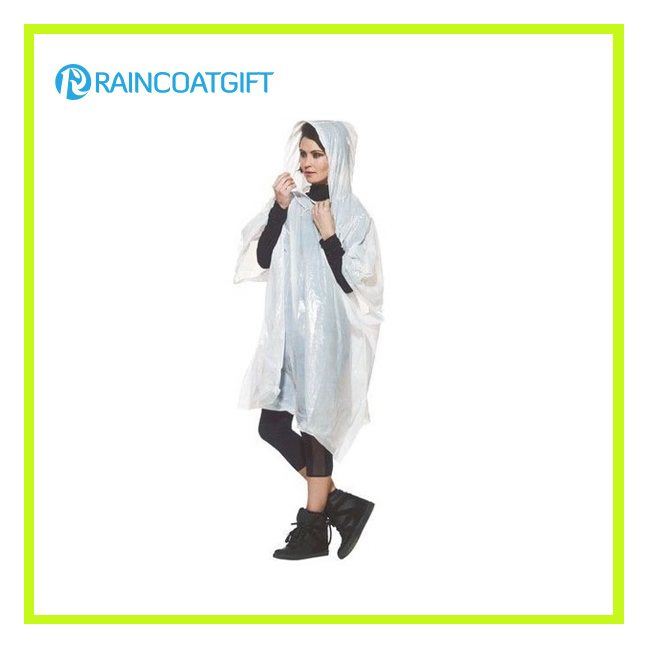

Illustration similar – shows the product type.
Workwear
Softshell work jacket, wind- and water-repellent
Three-layer softshell jacket with fleece backing and reflective details for the transitional season and winter sites.
The softshell work jacket protects against wind and light rain during demolition, strip-out and outdoor work without restricting movement. A professional user in Germany expects clean workmanship, well-planned pockets for phone and folding rule, reflective details and a PFC-free finish.
Technical data
| Construction | 3-layer: polyester twill + TPU membrane + fleece |
|---|---|
| Weight | approx.; 300 to 340 g/m² |
| Water column | min.; 5,000 mm |
| Breathability | min.; 3,000 g/m²/24 h |
| Details | detachable hood, hook-and-loop cuffs, reflective piping |
| Sizes | S to 5XL (EU measurements) |
| Customs tariff number (HS) | 62019300 |
EU standards and regulations
EN 343Protection against rainEN ISO 20471High-visibility clothing (hi-vis variant only)Verordnung (EU) 2016/425PPE Regulation, CE marking, category II for EN 343/EN ISO 20471EN ISO 13688Protective clothing, general requirementsREACH (EG) 1907/2006Chemicals regulation, incl.; restrictions on PFAS/PFC and azo dyes
Goes well with

Thermal base-layer set for winter work (long-sleeve top + long johns)Two-piece base-layer set made of polyester/spandex with fleece inside for work in the cold: the foundation under winter jacket and softshell.

Heated work vest (USB/power bank, multiple heating zones)Heated vest with carbon heating elements in four zones and a 16,000 mAh battery (USB-C) for work in the cold.
More products in this category

Cotton canvas work trousersRobust cotton canvas work trousers with knee, cargo and rule pockets for daily site use.

Cotton work bib overalls with knee-pad pocketsHard-wearing cotton or cotton-blend bib overalls with chest, folding-rule and knee-pad pockets for shell construction, demolition and refurbishment.

Work jacket (waistband jacket), cotton/blendRobust waistband work jacket in cotton-blend fabric with chest pockets, elastic waist and zip for daily use on site and in the trades.

Padded winter work jacket, wind- and water-repellentWarm padded winter jacket with water-repellent outer fabric, fleece collar and wind-stopper cuffs for outdoor work in frost.

Hi-vis safety vest, yellow/orange, EN ISO 20471Fluorescent hi-vis vest with reflective stripes for construction, demolition and traffic-management work.

Hi-vis jacket EN ISO 20471, waterproofFluorescent hi-vis jacket with retroreflective bands to EN ISO 20471 for road works, traffic management, logistics and sites with vehicle traffic.

Work pullover / fleece sweatshirtHard-wearing cotton-polyester fleece pullover as a warm mid-layer under a jacket or vest.

Cotton work T-shirtHard-wearing round-neck T-shirt made of 100% cotton as the base layer for everyday site work.

Cotton polo shirt, workwear grade (embroidery-ready)Shape-retaining cotton piqué polo shirt with button placket, suitable for logo embroidery and printing as corporate and team wear.

PU rain protection set (jacket + trousers), EN 343Waterproof rain set of PU-coated polyester with taped seams for outdoor work in continuous rain.

Knee pad inserts for work trousers (EN 14404 Type 2)Pair of inserts made of shape-retaining EVA foam for the knee pockets of work trousers: cushions pressure when kneeling and is an inexpensive wear part to reorder.

Work belt with tool and nail pouch set (holster pockets)Polyester tool belt with tool and nail pouches: moves the weight from the trousers to the hips and keeps standard tools within reach.

Hi-vis work trousers EN ISO 20471 class 2 (stretch, knee pockets)Fluorescent yellow or orange stretch work trousers with retroreflective bands to EN ISO 20471 class 2 and knee pockets for road works, civil engineering, logistics and traffic management.

Hi-vis bib trousers EN ISO 20471 class 2Fluorescent bib trousers with retroreflective bands to EN ISO 20471 class 2, chest and side pockets and braces for road, civil and rail works and logistics.

Work socks for safety shoes (cotton blend, terry cushioning, 3-pack)

High-visibility T-shirt EN ISO 20471Short-sleeve T-shirt of 100 % polyester in fluorescent yellow or orange with 5 cm retroreflective bands to EN ISO 20471.

Welder's protective jacket (EN ISO 11611)

Heat and flame protective coverall (EN ISO 11612, FR cotton)

Arc-flash protective coverall for electricians (IEC 61482, arc category 2, FR cotton)

Antistatic ESD work coat (EN 1149-5 / EN 61340-5-1)

Cargo work shorts, cottonShort work trousers with cargo and tool pockets for summer.

Polycotton work coverall (boiler suit)One-piece polycotton coverall for workshop and industry.

Reusable PVC rain ponchoReusable hooded rain poncho, quick to put on.

Elastic work suspenders, X-back, metal clipsHeavy-duty elastic suspenders with metal clips.

Sleeveless fleece vest, workwear gradeWarm sleeveless fleece vest, embroidery-ready.

Knitted beanie, acrylic, embroidery-readyWarm acrylic knitted hat for winter work.

Balaclava, acrylic/fleeceWindproof balaclava for cold outdoor work.

Cotton work baseball cap, embroidery-readyAdjustable cotton cap for work and team wear.